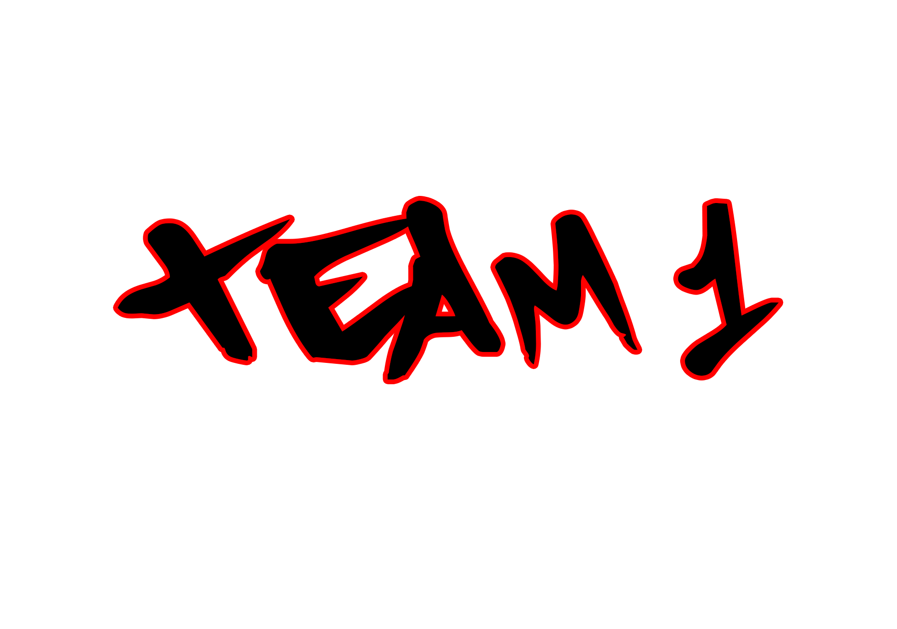

Echipa 1 — Matei & Alex
Team 1

Echipa 2 — Mihai & Raluca
Team 2

Echipa 3 — Madalin & Edi
Team 3
Provocări pentru 2 ore
- Asezati Bustuchin sub Nova LaB din div-ul brand
- Personalizați butonul (culori, efect hover).
- Înlocuiți imaginea cu un PNG propriu.
- Extindeți textul cu o poveste de 3–5 propoziții.
- Adăugați o animație CSS la apariția imaginii.
- Adăugați în navbar o pagină „we are NovaLab”.
- Asigurati incadrarea corecta a imaginii din footer pe mobile